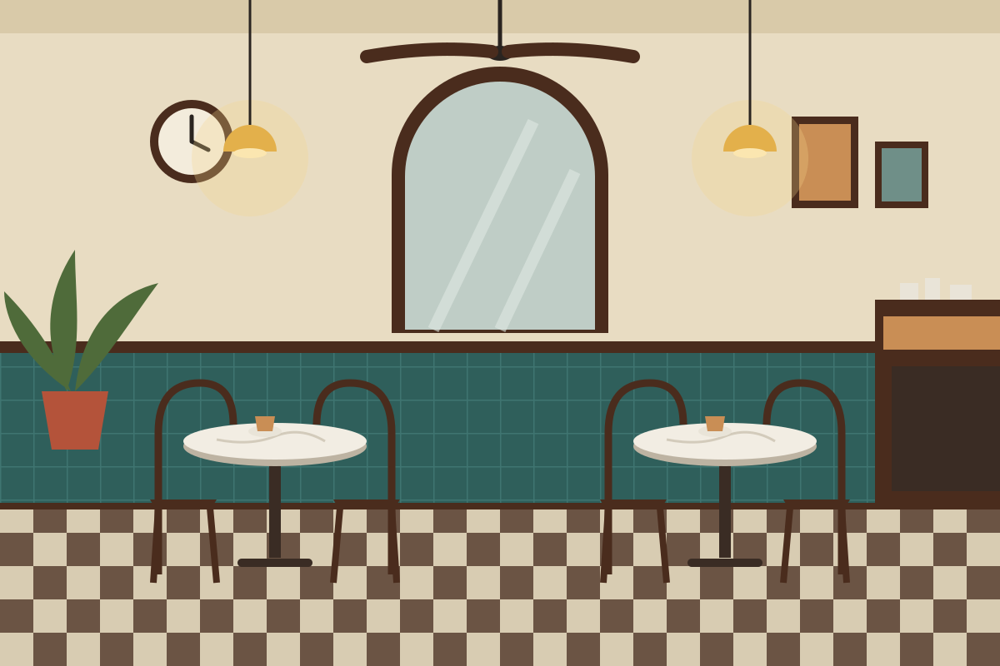
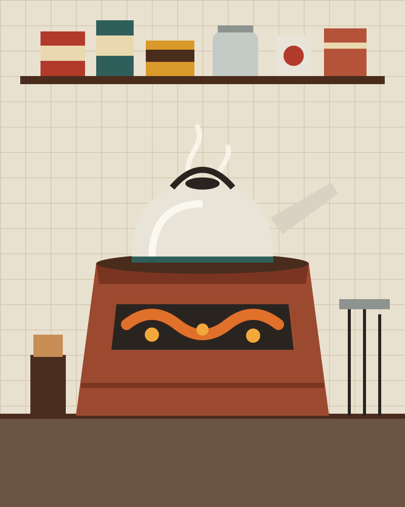
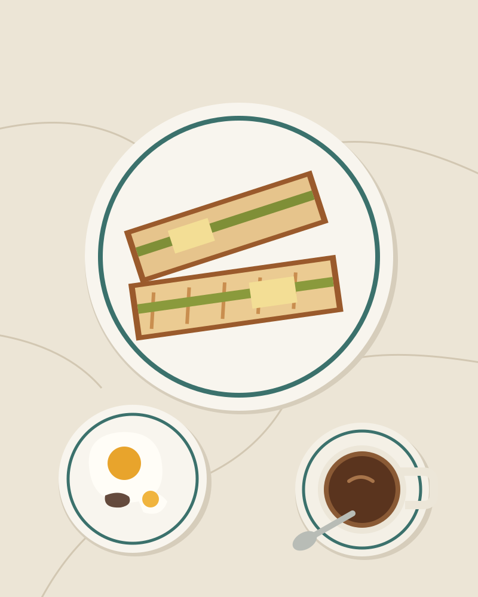
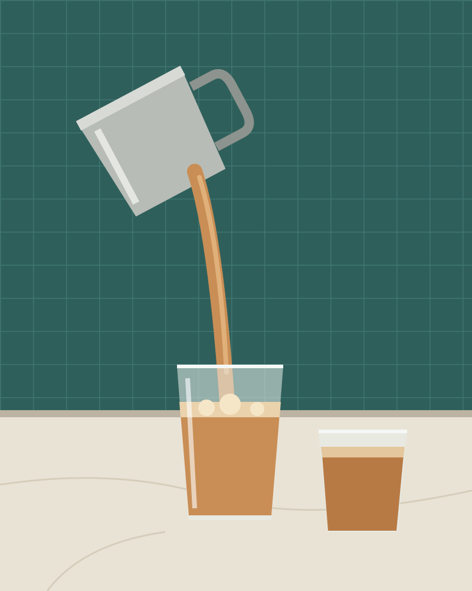
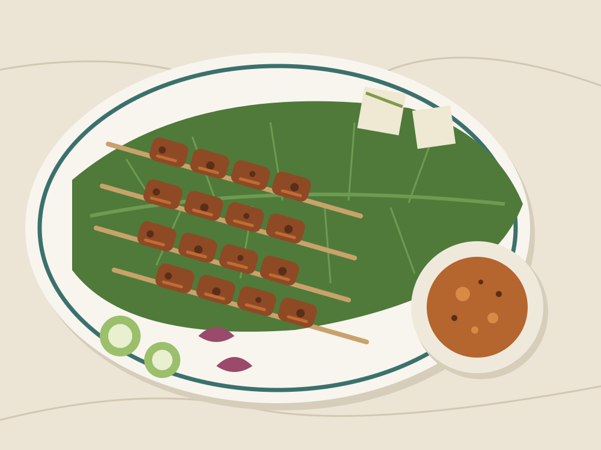
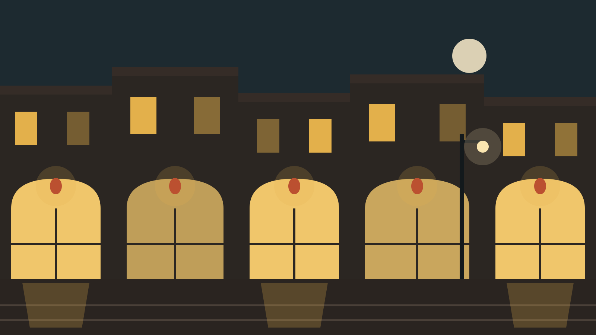
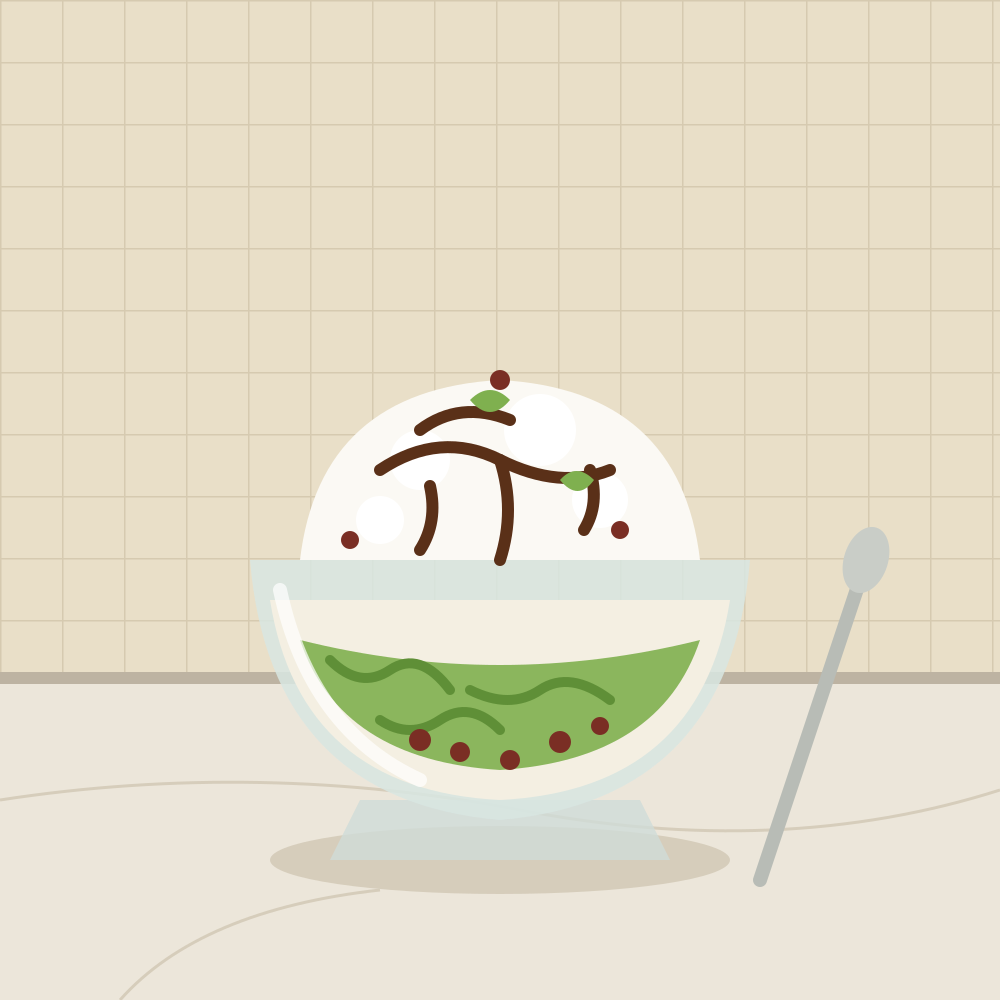

The first Lamplight
Quayside
14 Customs Quay, Port Ellery
Daily, 7.30 to 23.00. Courtyard seats under the old fig tree.

Come in, sit anywhere
Above: The front room at Quayside, just after the lamps come on.
Lamplight began with six marble tables and one charcoal stove on Customs Quay,and every coffee house since keeps the stove lit, the door open and the tea pulled by hand.

The old harbour coffee shops were where the whole port met: dock clerks and schoolteachers, night-shift nurses and families after temple, all at the same marble tables. Breakfast was toast and soft eggs, lunch was a bowl of something hot, and evenings ran late on satay smoke and gossip.
We keep a little of that in every Lamplight: food that does not hurry you, tea poured from a height, and a seat for whoever walks in.
Read our story
From the first kopi to the last glass of tea
Harbour comfort food
Our kitchen cooks the food of the harbour coffee shops: the stalls, the shophouse kitchens and the carts that parked outside them.
Mornings begin with charcoal toast, kaya and two soft eggs with dark soy and white pepper. At noon the laksa pots come out, with chicken rice and wok-smoked noodles for the queue. Afternoons are for kuih and a second glass of tea, and the evening belongs to satay, sambal and claypots for the table.



Port Ellery
Westmere
Ashby Bay

Cold sweets for hot afternoons
Every hot season we wheel the old cart into the front room. Chendol is shaved ice over pandan jelly, red beans and cold coconut milk, finished with dark palm sugar at the table. For something richer, Ice kacang comes piled with sweetcorn, grass jelly and rose syrup. Both are made to share, and both melt quickly, so bring a friend.
Served from two o’clock every day at every café, until the rains come.
From the journal
Once a month, never more
New dishes, evenings at the cafés and one recipe to cook at home.
Thank you
The next letter goes out on the first Friday of the month.
Harbour comfort food
Breakfast from half past seven, the all-day menu from half past eleven, and tea whenever you like. Every café cooks the same menu, with a few specials of its own.
Allergies and dietary needsHungry already?
Three towns, six front doors
Every Lamplight opens at half past seven for breakfast and keeps half of its tables for walk-ins. Each one is built around a story from its street.
14 Customs Quay, Port Ellery
Daily, 7.30 to 23.00. Courtyard seats under the old fig tree.
3 Tannery Lane, off Mercer Street
Daily, 8.00 to 23.00. A long bar facing the night market.
The Sorting Hall, 1 Post Office Square
Daily, 7.30 to 22.30. A room for twenty-four under the old clock.
40 Kiln Street, Westmere
Daily, 8.00 to 22.30. The brightest room we have.
Unit 9, Northgate Arcade, Westmere
Daily, 9.00 to 22.00. Laksa to go from the window.
Slipway Road, Ashby Bay
Thursday to Sunday, 8.00 to 21.00. Tables on the jetty in fine weather.
No cafés in that town yet.
Lamplight on Customs Quay
The first Lamplight, open since 2014
Before the container port moved up the coast, Customs Quay was the busiest few hundred metres in Port Ellery. Lighters came and went all night, and the coffee shop on the corner served the men who unloaded them: kopi at four in the morning, rice at noon, beer and satay when the tide turned.
The shop closed when the work left. For twenty-five years its shutters stayed down, and the stove sat cold behind them. When we opened the doors again we found the marble tables still stacked against the wall, and the price list painted on the back of the kitchen door.
We kept both. The tables are back on the floor, the price list hangs over the counter, and the stove is lit at half past six every morning, the way it was. Most mornings someone comes in who remembers the old shop and tells us what we have got wrong.
The full menu, and three dishes we only cook here
Visit us
14 Customs Quay, Port Ellery. Two minutes from the Harbour tram stop, five from the ferry terminal. There is step-free access through the courtyard gate and an accessible toilet on the ground floor.
Tables for one to eight
Half of the room is always kept for walk-ins. For nine or more, ask about a gathering.
Tables for one to eight
We keep half of every room for walk-ins, so if your time has gone, come anyway and we will find you a stool.
A table for at , at .
We will confirm by email to within the hour.
Long tables, set feasts, evenings
For nine guests or more we push the marble tables together and cook a feast for the whole table. Every café can host one; the Old Post Office has a room of its own.
Priced per guest. Groups of nine to forty.
Mornings
24
per guest
Our most booked
42
per guest
Evenings
58
per guest
Evenings at the cafés
Quayside, 10.00. One hour, two mugs, a lot of practice. Twelve places.
Old Post Office, 19.00. Seven small courses from the carts of the old harbour.
Tannery Lane, from 17.00. Stalls in the street and satay until late. Walk in.
Plan a gathering
Birthdays, leaving dos, a team lunch, a wedding morning. Write to us and the events team will reply within two working days with dates and a menu.
Or email events@lamplight.example.
The events team will write back within two working days.
Stories, recipes and notes from the quay
Two mugs, strong tea and a steady arm. Our head of tea on the one drink every café is judged by.
Nothing here yet. Try another kind of story.
Two mugs, strong tea and a steady arm
Every coffee house has one drink it is judged by. At Lamplight it is the teh tarik: black tea as strong as you can stand, condensed milk, and a long pour from one mug to the other until the top turns to foam. Done well it is smooth, sweet and a little smoky. Done badly it is just milky tea with an audience.
The pulling is not for show, or not only. Each pour cools the tea to drinking temperature, mixes the milk right through and beats air into it. Our tea makers pull each glass six or seven times. At home, four will do.
Use a strong, plain black tea, the kind sold as dust or broken leaf. Brew it in a pot or a cloth sock for longer than feels right: five minutes at least. Weak tea disappears under the milk, and the foam will not hold.
“If your arm is not tired, you have not pulled it enough.”
Hold the full mug low over the empty one and start to pour. As the stream finds its line, lift the full mug slowly to arm’s length and keep the bottom mug still. Bring the mugs together before the stream runs out. Swap hands and pour back. Practise over the sink with water first; everyone spills at the start.
Teh tarik for two
Since the first stove was lit
A coffee shop on the quay, a family that would not let it go,and six front doors that all open at half past seven.
In 1952 Lim Ah Choo opened a six-table coffee shop on the corner of Customs Quay, with a charcoal stove, a cloth coffee sock and credit for anyone who worked the docks. It fed the harbour for thirty-five years.
His granddaughter May Lim grew up under those tables. When the building came up for rent in 2014 she took it, lit the old stove and cooked her grandfather’s laksa from a notebook in his handwriting. The queue started on the second day.
Seventy years in five lines
Every café cooks on charcoal and lights it before dawn. It is slower, and the toast is better.
Half of every room is kept for walk-ins. Nobody should need a booking for breakfast.
Each café takes its story, its specials and its staff from the street it stands on.
Before you come
No. Half of every room is kept for walk-ins, and breakfast is walk-in only. Booking helps for Friday and Saturday evenings.
Reply to your confirmation email, or call the café. There is no charge for cancelling.
Tell your server before you order. Our kitchens use nuts, shellfish, gluten, egg and soy, so we cannot promise any dish is free of them, but we will tell you exactly what is in each one.
Always. We have high chairs, half portions of most dishes and a lot of paper napkins.
Each café page lists its entrances and toilets. Call ahead and we will keep a table near the door.
Yes, at the counter of every café, in any amount. They work at all six.
For nine or more, see Gatherings: set feasts on long tables, or the private room at the Old Post Office.
Still wondering? Write to us.
We read everything
We reply to every message within two working days.
Updated 1 November
This explains what Lamplight Kopi House Ltd. collects when you book a table, send a message or sign up for the letter, and what we do with it.
Your name, email address and the details of your booking or message. Nothing else is required, and we do not use advertising trackers.
To hold your table, answer your message and, if you ask for it, send the monthly letter. We keep booking details for twelve months.
Every letter has an unsubscribe link. To see, correct or delete what we hold about you, write to hello@lamplight.example.
Updated 1 November
The small print for bookings, gatherings and gift cards at every Lamplight café.
We hold tables for fifteen minutes after the booked time. There is no charge for cancelling a table for eight or fewer.
Set feasts are confirmed with a deposit of ten per guest, returned if you cancel seven days ahead.
Gift cards work at all six cafés for two years from purchase and cannot be exchanged for cash.
This table is not set
It may have moved, or the link may be old. The kettle is still on.